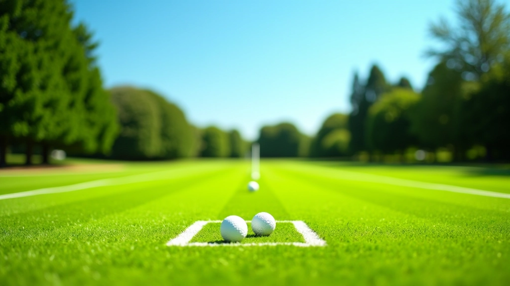

إدارة البطولات
تنظيم بطولة الكروكيه المفتوحة بحدائق المنتزه
تنظيم شامل لبطولة رسمية تضمنت إدارة جدولة المباريات، تطبيق قواعس اللعبة الدولية، وتجهيز ملعبين وفقاً للمواصفات المعترف بها دولياً. غطت البرنامج مدة 8 أسابيع من التحضير والتنفيذ.